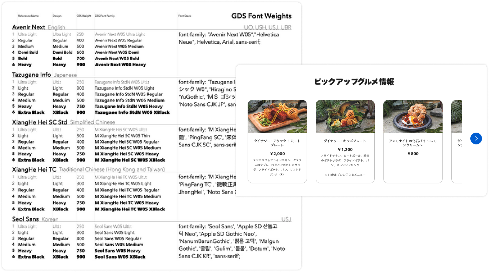
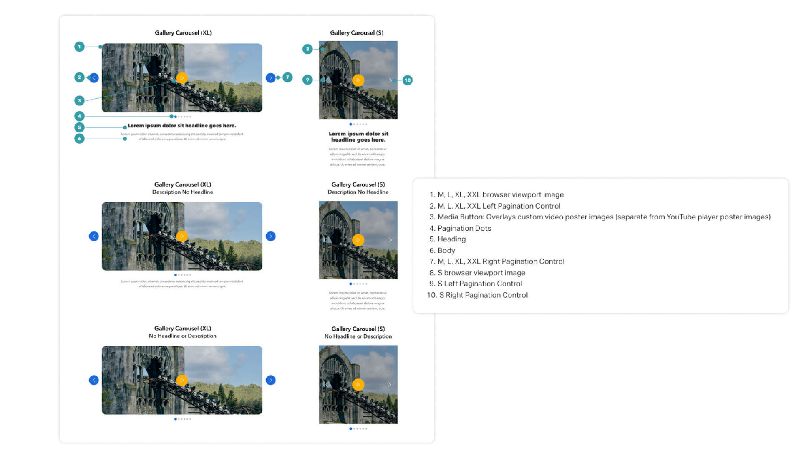
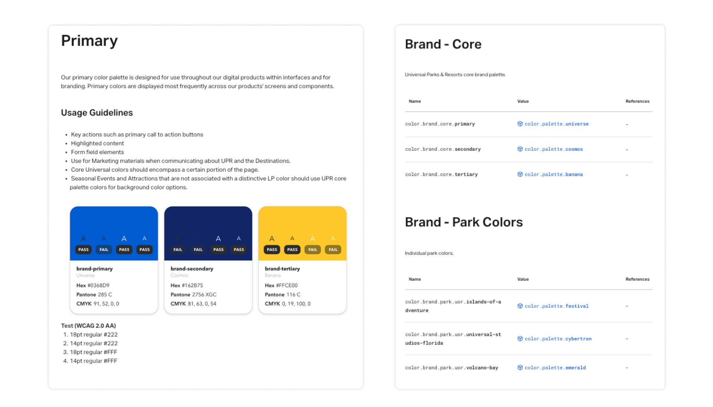
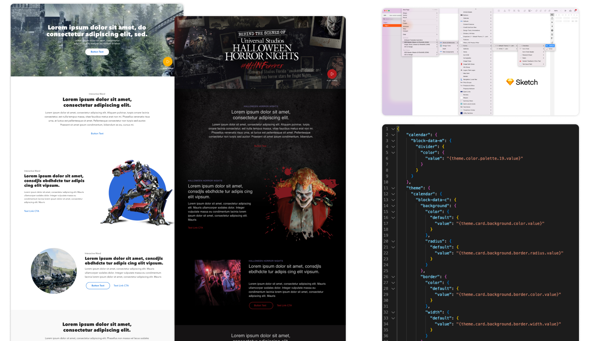
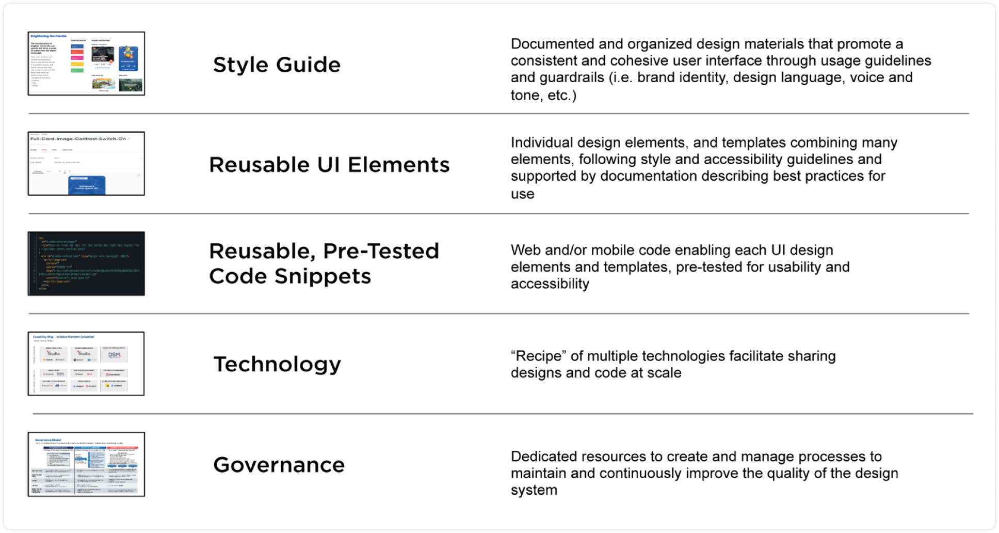
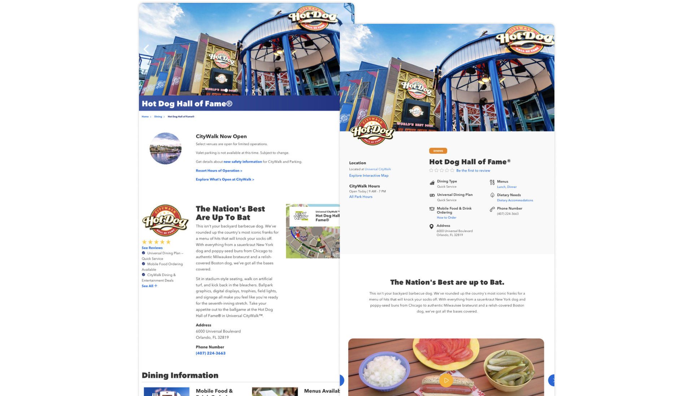
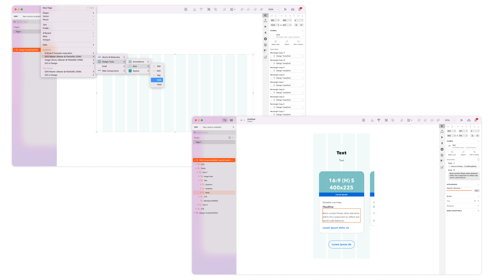

I’ve been responsible for the governance, prioritization, tooling, and day-to-day management of the Global Design System since its inception in 2019. I am grateful to be working with such a talented team to make this vision a reality, enabling teams across the organization deliver delightful, consistent experiences to our guests faster than ever before.
Universal Parks and Resorts sought to align the UPR brand across all five destinations in North America and Asia. To support this vision, the UPR Digital team created a Global Design System platform to connect all UPR digital touch-points to a common pipeline to deliver consistency while adding value to other areas of the business.
Branded elements and interactions have been formalized for consistency around the world.
Designers, Developers, and Content Producers deliver 50% faster using GDS tooling and documentation.
The official set of durable, tested components reduces effort across all roles, from Creative to QA.
Common tooling keeps all designers up-to-date with the latest releases.
A shared repository of durable, tested components are available "off the rack" for frequently-used patterns.
Teams are confident that specific accessibility, regulatory, legal, and other common concerns have been addressed at the platform level.
We began with stakeholder interviews, a tools assessment, and initial pattern audit of the existing primary web property for our pilot. It's so true how every design system conversation seems to revolve around buttons. ;)
We facilitated discussions to create a common nomenclature and shared vocabulary in documentation and communication across the platform. Playbooks were started at each phase to formalize each process and onboard new users, creating a virtuous cycle of feedback to inform future efforts.
We began creating tested, durable components that support multiple applications so the design and development teams are able focus on new user needs. Personalization, Internationalization and Localization are built into the system at the Build layer with simple configuration for each instance. These components are all connected back to the core, enabling business teams to quickly deploy components around the world with confidence.
Publishing "playbooks" were created for common patterns such as Point of Interest pages and ticket products to enable business teams to publish consistent content with fewer resources and shorter timelines.
Many common mis-steps are now handled with defaults by the system such as color contrast compliance. WCAG Accessibility guideline validation is built into pipeline from initial research to publishing to deliver an inclusive experience.
Theming is available at the site-, page group-, page-, and component-level to enable faster speed-to-market for independent, co-branded, and/or sub-branded efforts and built into design tooling through token architecture, reducing designer effort.
As a new program that affected ways of working across many teams, wide and frequent communication across departments was needed to prevent blockers to program success and continue to shape expectations of what the GDS would provide.
We identified and interviewed key influencers and decision makers that would potentially be impacted to understand their current pain points and demonstrate how GDS could provide a solution. Then we made them part of the process moving forward, creating champions for the design system.
Our process pulls Design, Product, Business, and Development teams closer together (by design) to more easily deliver on a shared vision and to align on KPIs and reporting for each effort.
The system was introduced using a single destination’s web content application, starting with 350 pages. An initial GDS workflow was established to design, build, consume, and publish components. A separate process was established to elevate the existing content of those pages along with a stakeholder routing process. Progress was communicated weekly to Marketing and IT teams. Worked across teams to establish a global governance and contribution process to provide rigor as the system evolved to supports all destinations and campaigns.
Rigorous documentation continues to evolve to provide clarity of system process and assets to business, product, UXUI, and development roles. Patterns from the smallest values such as color systems up through multi-screen flows are documented for efficient re-use, saving design and development time.
Every pattern is documented at a single-source aligned with the DRY approach (Don’t Repeat Yourself). “Click-downs” are provided to easily understand how atoms, molecules, organisms, and components are composed along with a role and usage guidelines for each.
Greater composability of component elements and their associated design tooling promotes reuse of existing patterns. Formalized organization of assets (imagery, iconography, color palette, etc.) creates brand consistency and enables design teams to focus on larger user problems.
Design tooling is tightly aligned with code through color/type systems and component design to promote a common understanding of system architecture and behavior such as internationalization and theming options.